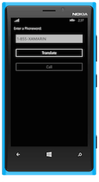

Creating Xamarin.Forms Phoneword
Duration
20 minutes
Goals
The goal will be to create a new Xamarin.Forms application which displays a UI to translate and dial a phone number. The UI will consist of a: Label, Text Field and two Buttons.
|  |

|
Our steps for this exercise be broken into two separate sections - first, creating the UI by:
- Create the UI using a
StackLayout,Label,Entryand twoButtonelements.
Next, we will add some behavior that will:
- Respond to a
Clickevent on the Translate Button. - Retrieve the text typed into the Entry.
- Translate the alphanumeric text into a traditional phone number, where ABC ➡ 2, DEF ➡ 3, etc.
- Update the text of the Call Button to include the translated numeric phone number; we will also update the enabled state so the user can tap the button, although we won't add any behavior to actually dial the phone here.
Assets
There is a C# source file named PhoneTranslator.cs which will need to be added to your project. It is located in the Content/Exercises/Intro.Forms/Part 01 Resources folder of the labs directory.
Exercise Challenge
Using the worksheet to give you the information you need, try to accomplish the (5) steps outlined above for this exercise. If you need some additional help, there are step-by-step instructions below. Here are some notes to help you get started:
- The translation of the phone number will be done by an existing static method called
PhonewordTranslator.ToNumberwhich looks like. - Feel free to experiment and ask questions during the lab - there is a completed version of the lab in the resources folder if you don't have enough time to complete it as written here.
public static string ToNumber(string alphanumericNumber);
Steps
Create the initial project
The first step is to create a new Xamarin.Forms project. You can use either Visual Studio (shown here) or Xamarin Studio.
- Create a new solution and select the "Blank App (Xamarin.Forms Portable)" project type from the Mobile Apps category under (Visual) C#.
- Name the project "Phoneword" and place it into a known location.

Add PhoneTranslator to our project
We need to add the code to translate the alphanumeric phone number into a numeric phone number. The code has already been written for you and is in the Part 01 Resources/PhoneTranslator.cs source file.
- Right-click the shared project node (this should be named Phoneword and be in the root of the solution) and select Add > Add Files... in Xamarin Studio, or Add > Add Existing Item... in Visual Studio.
- Navigate to the Part 01 Resources folder and select the PhoneTranslator.cs file to add it to the project.
- In Xamarin Studio, use the default Copy choice.
- Open the file and examine the contents - it has a single public static method, which you will be using to translate the number from alphanumeric text into a straight numeric number.
Restructure the Boilerplate code
As a first step, let's make the code a little more maintainable by restructuring the shared code a little.
- Open the App.cs file which was created as part of the template.
- Take the code which creates the page and move it to a new class that derives from
ContentPage- name the class MainPage. Place the creation code into the constructor. - Change the
GetMainPagecode to now instantiate your newMainPageobject and return it. - Run the application and make sure it still builds and executes. You can run the application on any of the three platforms, for time just pick the easiest platform for your configuration.
Create the UI for Phoneword
Next, we need to describe the user interface for Phoneword. Remember, we are using controls defined in Xamarin.Forms which will then be rendered with native implementations in each project.
The controls you need to create are:
Labelwhich has the text "Enter a Phoneword:".Entrywhich is used to collect the input from the user. It should be initialized with the text "1-855-XAMARIN".Buttonwith the title "Translate" which will activate the number translation.Buttonwith the title "Call", which will eventually call the number. This should be initially disabled.- You should capture off the
Entryand the twoButtoncontrols in fields so you can interact with them later.
All of the above needs to be organized in the UI top-to-bottom, so you can use a StackLayout in the vertical orientation. Here are the layout rules we'd like to have:
- The content should be set to fill/expand to the screen size.
- Children should have a 15 device pixel spacing between them.
- The entire page should have some padding - in particular, it should have 20 device pixels oun all edges, except iOS where it should have add another 20 device pixels to the top (for a total of 40). Check out this hint in the worksheet for how to do this.
- Run the application and verify the UI has the proper layout and controls are all visible. On iOS, it should look something like:
Implement the Logic for the Translate Button
We need to handle the Click event for our
TranslateButton - this will be raised when the user taps on the translate button in the UI and is the abstracted event for all the platform variations. The handler should:
- Get the phone number from the
Entrycontrol.- Hint: use the
Textproperty.
- Hint: use the
- Translate it using the
PhonewordTranslator.ToNumbermethod.- You will need to add a namespace to access it.
- This method returns
nullif the number could not be translated.
- Change the text of the Call Button to include the phone number when it is successfully translated.
- Hint: use the
Textproperty.
- Hint: use the
- Enable the Call Button so it can be tapped to dial the phone.
- Hint: use the
IsEnabledproperty. - Make sure to reset the title of the CallButton if the number translation fails.
- Hint: use the
Test the Application
- The Translate Button is now wired with behavior, so go ahead and test it. Run the application in either the simulator or on a physical device.
- The application should build and if everything has gone well our app will display and show a disabled Call Button.
- Touch the Translate button in our app and verify the Call button title changes to "Call 1-855-9262746", and the button becomes enabled.
- Try changing the phone number in the Text Field. Notice that iOS pops up an on-screen keyboard automatically. It should dissmiss either when you tap the Translate button, or when you press the Return key on the iOS keyboard. This behavior is built into Xamarin.Forms and makes the keyboard experience consistent across the platforms.
- If you have time, try running it on the other platforms to see the consistent UI and experience you have created.
Summary
In this lab, we have built our first Xamarin.Forms application with real logic. In the next lab, we are going to extend this application by adding some device-specific behavior to show an alert box and dial the phone.